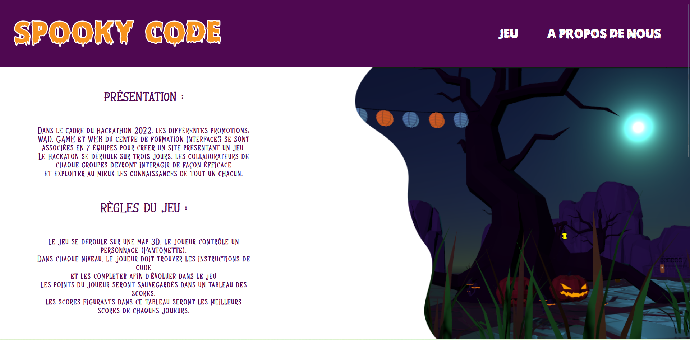

Qui suis-je ?
Je suis une mordue d'informatique depuis l'âge de 12 ans. Mes premières lignes de codes, je les ai faites en Q-Basic sur un 486, je m'interesse depuis peu à Kali Linux et à d'autres distribution. J'adore faire du sport en l'occurence du vélo, je m'interesse à la spiritualité, à la géopolitique, au Reiki, ... J'aime beaucoup les jeux de société tels que les jeux de rôles, le jeu de Go, ... Je suis de nature sociable et diplomate, j'ai l'habitude du contact client grâce à mon passé en pharmacie.

Mon CV à
Projet 1 Molenbeek en promenade
Ce projet a été réalisé en collaboration avec deux collègues, dans le but de redorer l'image de Molenbeek. Le site propose trois itinéraires à faire à pied et à vélo.
Technologies utilisées :
Hackathon 2022
Le SpookyCode a été réalisé dans le cadre du Hackathon 2022, pour mener à bien ce projet, j'ai collaboré avec 4 collègues durant trois jours, ces trois furent intenses et riche en apprentissage.
Technologies utilisées :
Jeu Pokémon
Ce projet a été réalisé en collaboration avec deux collègues, dans le but de redorer l'image de Molenbeek. Le site propose trois itinéraires à faire à pied et à vélo.
Technologies utilisées :